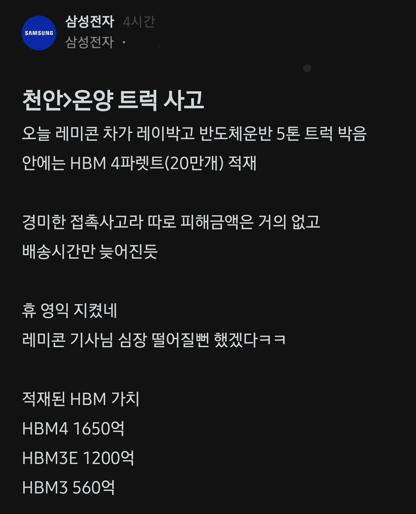
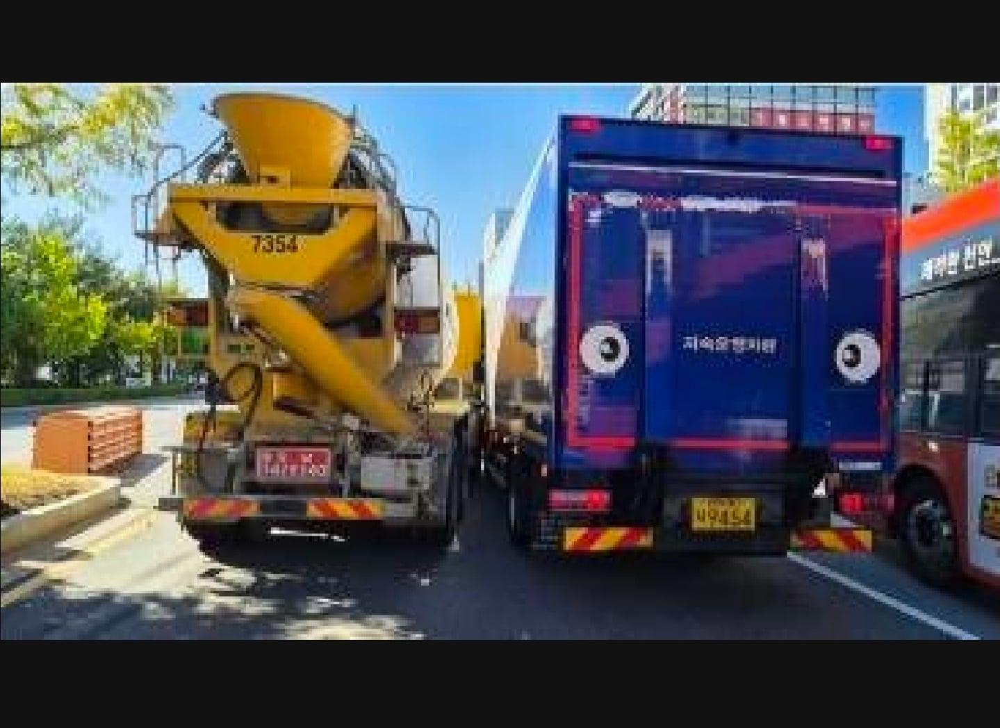
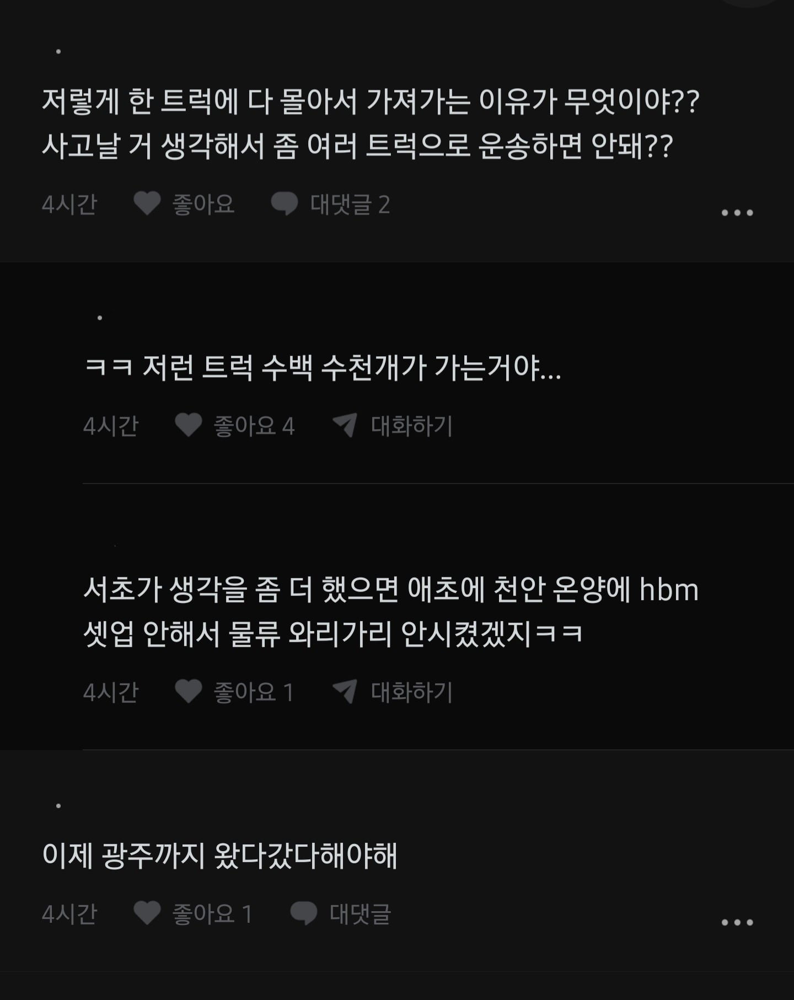
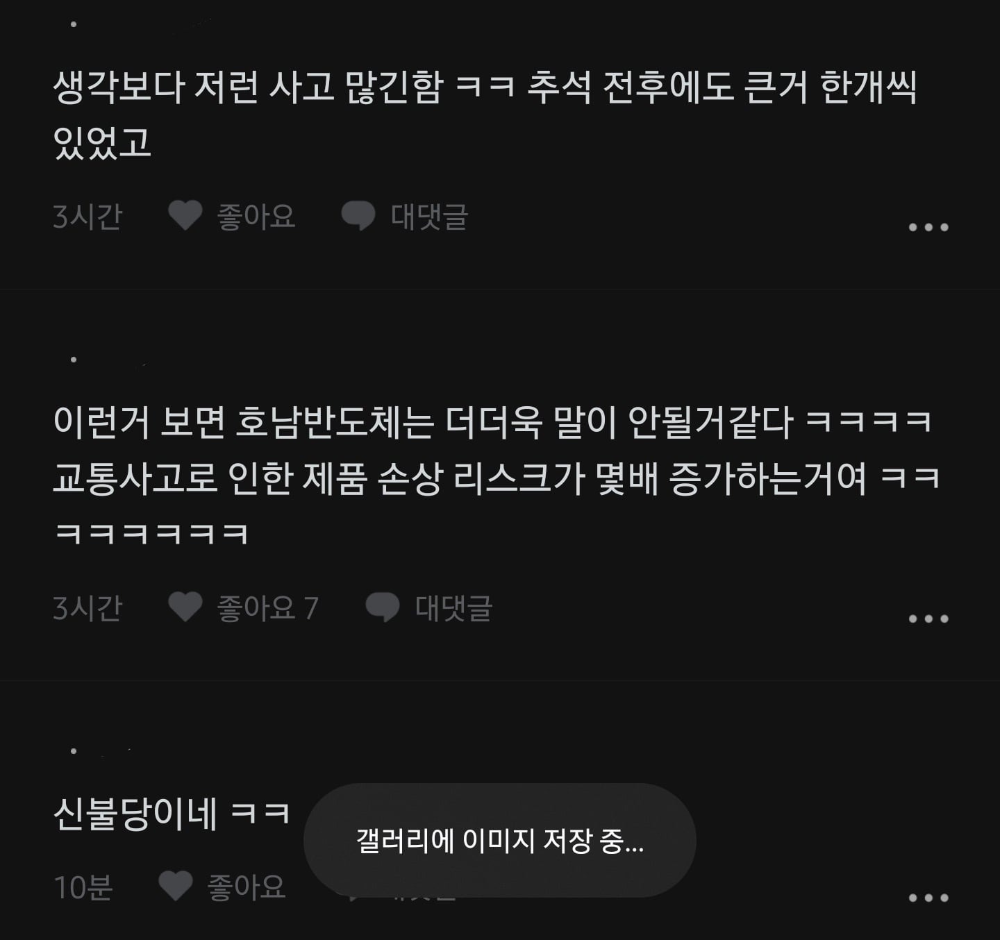

제대로 박았으면 3,410억 증발ㄷㄷ
이번엔 직원 피셜임




제대로 박았으면 3,410억 증발ㄷㄷ
이번엔 직원 피셜임
저정도는 의전차량 보내도 되지 않냐 ㅋㅋㅋ 다른 차주들도 이ㅍ해해 줄거 같은데
도로교통법상 불법이겠지?
앞뒤로 경호차량 붙여야 될듯
앞뒤로 호위차량 붙혀야하는가이닌가
레미콘은 존나 무거워
뽁뽁이로 좀 더 싸면되잖아 ㅡ
천억대 수송 차량이면 상하좌우 엄호차량들 비치시키고 같이 옮겨야되는거아님? ㅋㅋㅋㅋㅋ
레미콘에 치인 레이는 무사한겨?
최영익?
덤프트럭 짐칸 개조하는게 낫것다 와.. ㅅㅂ
FT까지 다 치고 공항 가는건가? 웨이퍼 레벨이 아니라 접촉사고정도로는 호들갑 안떨어도 되긴 함.
무서워서 배송하겠나 저거 ㄷㄷㄷㄷ
그 와중에 호남반도체 이야기하는새끼보면 국가 분열 원하는 새끼같음
걱정되는 사안이긴 하니깐.. 충청도권에서 와리가리하는 것도 사고나서 불안한데 호남에서 경기까지 올리려면...
너도 좀 솔직해져라 호남반도체 반대하던애들이 대부분 경상도에 왜 안짓냐고가 대부분임 거리때문이 아니라 지 정치심보때문이지
ㄷㄷ 롤스로이스보다 무서운게 저거라더니 금액대가 살벌하네
미스터비스트, 여기 컨텐츠감이다
그냥 헬기 써
나랏님이 좀 신경써야겟네 그그 호남반도체할꺼면 ㅋㅋ 실제 완공되면 말이지
경기남부에는 ㄹㅇ 공항하나 있을만 한듯
저정도면 화물공항 지어라ㅋㅋ
저런거 보면 반도체는 몰려있는게 맞음
천안도 먼데 광주는 ㅋㅋ